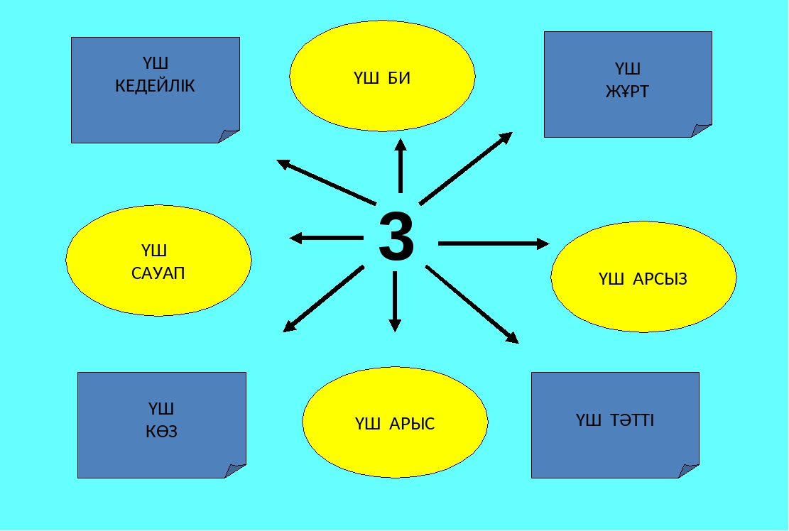
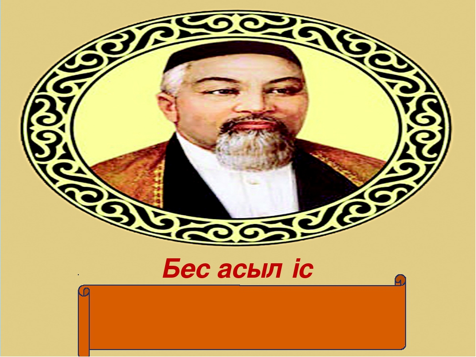
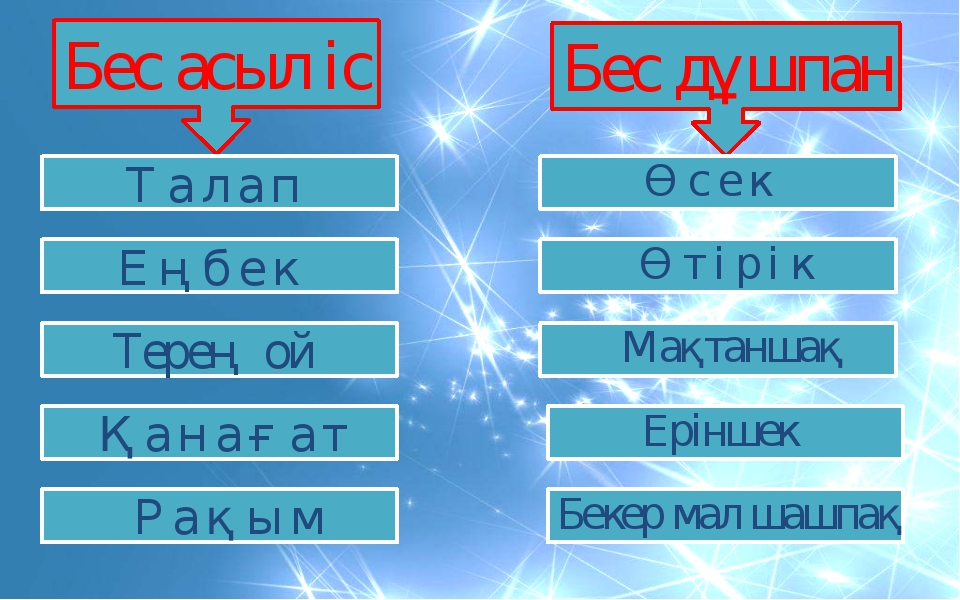
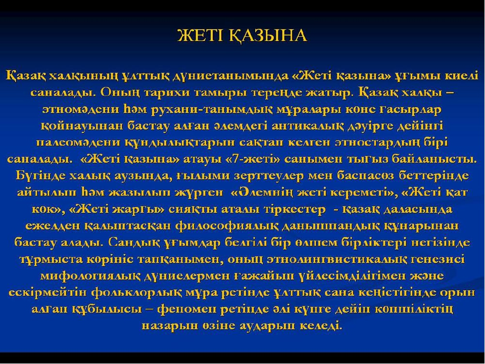
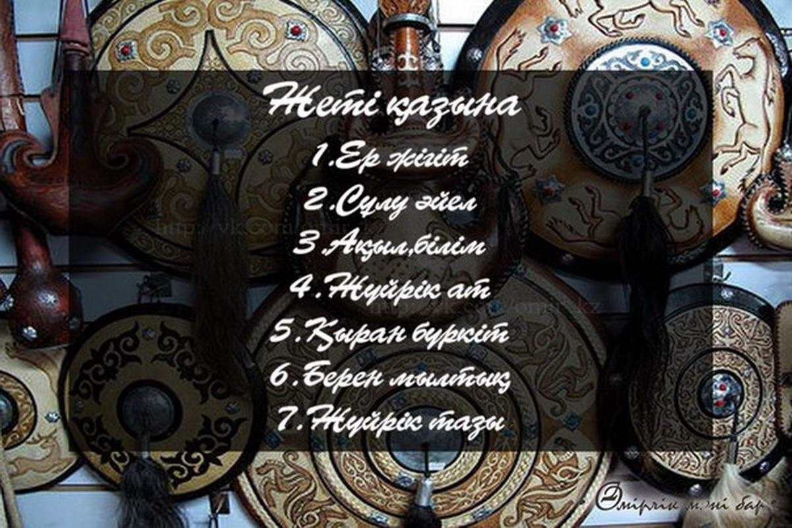
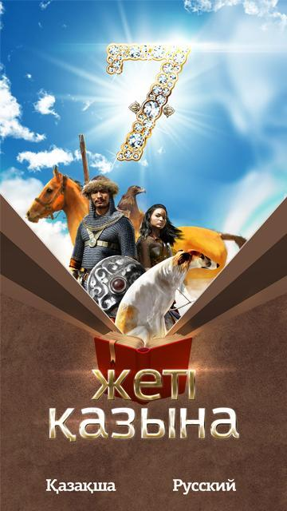

Жеті ата – қазақ халқының ежелден келе жатқан шежірелік жүйесі. Жеті атаға толмай қыз алыспау – ата-бабамыздан бері келе жатқан қазақтың тәрбиелік дәстүрі. Әрбір қазақ жеті атасын жетік білуі міндетті, бұл отбасылық тәлім-тәрбиенің негізі
Жеті ата туралы мақал-мәтелдер
"Жеті атасын білмеген – жетесіз"
"Жеті атасын білген жетімдік көрмейді"
"Жеті атасын білген ұл, жеті жұрттың қамын жер. Жеті атасын білмеген, құлағы мен жағын жер".


Қазақ – сөзге тоқтай білетін халық. Мұның астарында халқымыздың әр сөзіне мән беретінін ұғуға болады. Сонымен бірге, қазақ үшін әр сөздің ғана емес, әр санның өзіндік қасиеті, тәрбиелік мәні, саналы орны болған. «Бір Аллаға сыйынып» деп бастайтын ұлт әр санның қадірі мен қасиетін салмақтап, өзіне тән ерекшелігін саралай білген, орнына, маңызына сай қолданған. Осыған орай, үш санының қадыр-қасиетіне байланысты айтылған халық нақылын ұсынып отырмыз.
Үш
жұрт:
Ағайын
жұрт. Нағашы жұрт. Қайын жұрт.
Үш
байлық:
Бірінші байлық – денсаулық. Екінші
байлық – ақжаулық. Үшінші байлық –
қорадағы бес саулық.
Үш
би:
Үйсін
Төле би. Арғын Қаз дауысты Қазыбек би.
Алшын Әйтеке би.
Үш
дана:
Абай.
Шоқан. Ыбырай.
Үш
арыс:
Сәкен.
Бейімбет. Ілияс.
Үш
қат:
Жоғары
қат (аспан). Орта қат (жер үсті. Төменгі
қат (жер асты).
Үш
қуат:
Ақыл қуат. Жүрек қуат. Тіл қуат.
Үш
ғажап:
Ажал
ғажап. Қонақ ғажап. Несібе ғажап.
Үш
арсыз:
Ұйқы арсыз. Тамақ арсыз. Күлкі арсыз.
Үш
дауасыз:
Мінез.
Кәрілік. Ажал.
Үш
қадірлі:
Ырыс. Бақ. Дәулет (Жиренше шешен)
Үш
қадірсіз:
Жастық шақ. Денсаулық. Жақсы жар (әйел)
Үш
жамандық:
Нақақ
қан төгу. Кісі малын нақақ алу. Ата-бабадан
қалған ескі жұртты бұзу.
Үш
тәтті:
Жан
тәтті. Мал тәтті. Жар тәтті.
Үш
ақиқат:
Қымбат – шындық. Арзан – өтірік. Дауасыз
– кәрілік (Жанқұтты шешен).
Үш
қуаныш:
Алғыс алу. Өзіңді көптің іздеуі. Ісіңнің
өшпеуі.
Үш
биік:
Билік.
Дәулет. Даналық.
Үш
асыл:
Көз.
Тіл. Көңіл.
Үш
артық: Адалдық.
Еңбексүйгіштік. Өнерпаздық.
Үш
ынтық:
Еркін
өмір. Құрметке бөлену. Пайдалы еңбек
ету.
Үш
тұл:
Қайратсыз
ашу тұл. Тұрлаусыз ғашық тұл. Шәкіртсіз
ғалым тұл (Абай).
Үш
апат:
Ғалымдар
мен қарттарды сыйламау. Өкіметті
сыйламау. Асты ысырап ету.
Үш
кедейлік:
Кежірлік.
Еріншектік. Ұйқы (Төле би).
Үш
кемдік:
Надандық. Еріншектік. Зұлымдық (Абай).
Үш
бақытсыздық:
Жаман
ат. Жаман қатын. Жаман көрші.
Үш
көз:
Су
анасы – бұлақ. Жол анасы – тұяқ. Сөз
анасы – құлақ.
Үш
тоқтам:
Ақыл
– арқан, ой – өріс, адам – қазық.
Үш
қасиет:
Өліде
– аруақ. Малда – кие. Аста – кепиет.
Үш
тағылым:
Мейірімнен
– сауап. Жақсылықтан – шарапат.
Жамандықтан – кесапат
 

 